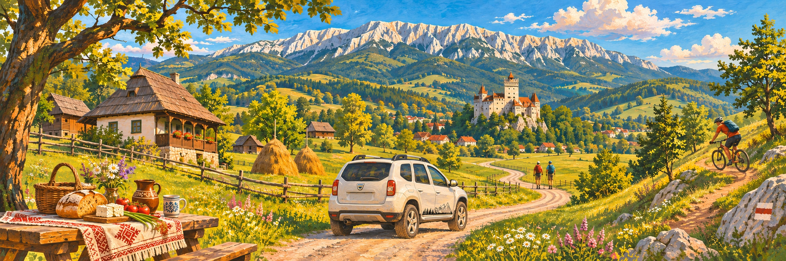

Plimbări cu mașina pe drumuri de munte
Descoperă drumurile dintre Bran și Moieciu, cu opriri pentru priveliști și fotografii.

Tururi private cu mine, Corina. Plecăm de la cazarea ta din Brașov, explorăm satele de munte și te aduc înapoi la finalul zilei.
Îmi planific aventura Vezi traseeleAm crescut mergând cu familia pe munte și cu cortul. Și acum, una dintre cele mai mari bucurii pentru mine e să duc pe cineva pe un drum de munte pe care altfel poate nu l-ar fi descoperit.
Mai multe despre mineDescoperă drumurile dintre Bran și Moieciu, cu opriri pentru priveliști și fotografii.

Mergi printre porți de lemn, fânețe și casele răsfirate din Măgura și Peștera.

Putem construi ziua în jurul Castelului Bran sau putem include Peleș, Râșnov și locuri mai liniștite de pe drum.

Lasă timp pentru un prânz la sat, brânzeturi din zonă și o felie de plăcintă de casă.

Alege o plimbare ușoară prin pădure sau un traseu montan mai lung, în ritmul tău.

Prinde ultima oră de lumină pe dealurile de deasupra Moieciului. Ia cu tine aparatul foto și o haină călduroasă.

Hai cu mine prin Prăpăstiile Zărneștiului. Alegem cât mergem în funcție de ritmul tău.
Urcăm pe drumuri de munte și ne oprim deasupra satelor, acolo unde îți place lumina pentru fotografii.

Te pot prelua de la cazare, te duc cu mașina de la o oprire la alta și te aduc înapoi la finalul zilei. Unde traseul permite, urcăm cu Dusterul pe drumuri de 4×4 până la un punct de belvedere, lăsăm mașina pentru o drumeție sau zăbovim la un prânz în sat. Spune-mi ce îți place și stabilim traseul, programul și ce intră în tur.
O zi întreagăDimineața mergem printre pereții de calcar, apoi urcăm cu mașina la Măgura pentru prânz. Înainte de întoarcere, ne plimbăm pe culme spre Peștera, atât cât ai chef.
Planifică acest traseuO jumătate de ziUrcăm pe drumuri cu priveliște, ne oprim pentru o plimbare scurtă și un picnic, apoi privim cum se schimbă lumina peste munți înainte de întoarcerea la cazare.
Planifică acest traseu Două zile
Două zileÎn prima zi combinăm o vizită rezervată la Libearty cu Moieciu și Castelul Bran. A doua zi străbatem Prăpăstiile Zărneștiului și explorăm Peștera și Măgura. Stabilim dinainte costurile pentru intrări și prânz.
Planifică acest traseuAi un loc salvat pe hartă? Trimite-mi-l și vedem cum îl includem în traseu.
Îmi planific aventura„Am petrecut două zile fantastice explorând România alături de Corina de la CoolCush Hub și o recomandăm din toată inima.”